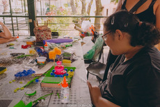
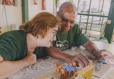
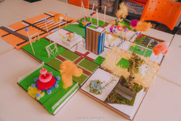
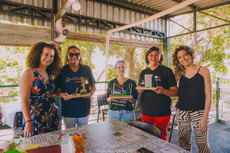
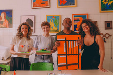
A oficina de maquetes Táteis foi uma atividade artística voltada para a criação de maquetes a partir da perspectiva de pessoas com deficiência visual. A oficina aconteceu em cinco encontros, nos quais os participantes aprenderam a construir maquetes usando diferentes materiais para sentir formas, texturas e volumes.
Durante os encontros, os participantes exploraram o espaço urbano por meio do toque, desenvolvendo a percepção espacial e a compreensão da cidade de forma tridimensional. As atividades foram práticas, dinâmicas e interativas, estimulando a criatividade, a troca de experiências e a confiança pessoal. A oficina também promoveu reflexões sobre a importância da acessibilidade na arquitetura e no design urbano, mostrando como os espaços podem ser mais inclusivos para todas as pessoas. Como resultado, as maquetes e as experiências criadas passaram a integrar o Projeto Cidade Sensível, servindo de base para o desenvolvimento de obras sensoriais e acessíveis na exposição, ampliando o olhar sobre a cidade e fortalecendo a relação entre arte, inclusão e território.
Ficha Técnica: Oficineira: Nathália Campos. Facilitadora: Júlia Zanon. Produção artística: Elora Carolina. Parceria: Associação dos Cegos Presidente Prudente. Fotos: Gasalucinação
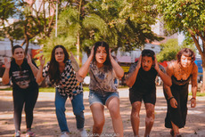
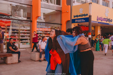
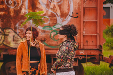
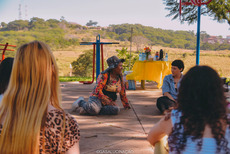
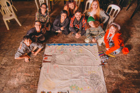
A Oficina de Performance Urbana – Corpo Cidade convidou os participantes a experimentar a cidade de forma sensível, usando o corpo como ferramenta de escuta, atenção e criação. Ao longo de cinco encontros, foram realizadas caminhadas, jogos corporais e ações poéticas no espaço urbano, estimulando a percepção dos sentidos e a presença no aqui e agora.
A oficina propôs observar os fluxos da cidade, suas memórias e seus silêncios, transformando essas experiências em movimentos, gestos e intervenções artísticas. O corpo foi entendido como parte da cidade e também como agente capaz de ativar novos olhares sobre o espaço público.
No encerramento, os participantes compartilharam seus processos em ações abertas, refletindo sobre a pergunta: “Como seria uma Cidade Sensível?”. A oficina reforçou a performance como prática coletiva, artística e política, capaz de imaginar outras formas de viver a cidade.
Ficha Técnica: Oficineira: Elora Carolina. Facilitadora: Júlia Zanon. Produção artística: Elora Carolina. Parcerias: Galpão da Lua e Mocambo Nzinga. Fotos: Gasalucinação
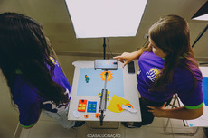
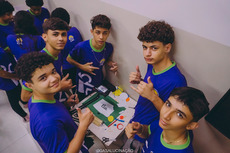
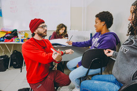
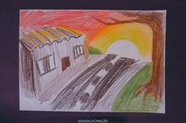
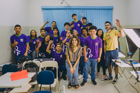
A oficina de Stop Motion foi uma atividade artística e educativa realizada com adolescentes em vulnerabilidade social na faixa etária entre 16 e 18 anos da CAC (Casa do Aprendiz Cidadão) de Presidente Prudente. O tema trabalhado foi “A Cidade dos Sonhos”. Ao longo de cinco encontros, os participantes aprenderam noções básicas de animação stop motion, criação de histórias e formas de expressão criativa.
Durante a oficina, os jovens foram incentivados a imaginar e representar, por meio da animação, como seria a cidade ideal para eles. O processo valorizou a troca de ideias, o trabalho em grupo e a expressão pessoal, prospectando uma variedade de desejos no caráter de equidade social, consumo e respeito a diversidade
Como resultado, foram produzidos curtas-metragens em stop motion e relatos dos adolescentes sobre suas visões de cidade. Esses materiais passaram a integrar o Projeto Cidade Sensível como forma de pesquisa temática para a elaboração das obras da exposição, realizada um pouco adiante.
Ficha Técnica: Oficineiro: Túlio Moscardi. Facilitadora: Júlia Zanon. Produção artística: Elora Carolina. Parceria: CAC Presidente Prudente. Fotos: Gasalucinação
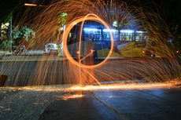
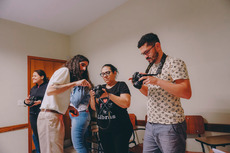
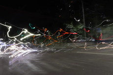
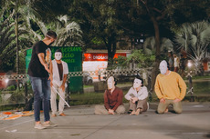
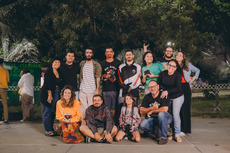
A Oficina de Fotografia foi pensada para a participação de pessoas surdas e parcialmente surdas, com idade livre. Ao longo de cinco encontros práticos, os participantes aprenderam técnicas de fotografia de rua, explorando a cidade a partir de suas percepções visuais e sensoriais.
A oficina propôs olhar a cidade de forma sensível, valorizando como pessoas surdas percebem os espaços urbanos por meio da imagem, do movimento e das vibrações. A fotografia foi usada como ferramenta de expressão, comunicação e criação, ampliando narrativas sobre a cidade.
Como resultado, foram produzidas fotografias e registros sonoros dos ambientes escolhidos pelos participantes. Esses materiais passaram a integrar o Projeto Cidade Sensível, trazendo novos olhares e experiências sobre a relação entre corpo, cidade e percepção sensorial.
Ficha Técnica: Oficineiro: Augusto de Souza. Facilitadora: Júlia Zanon. Produção artística: Elora Carolina. Intérprete de Libras: Alan Silva. Parcerias: Associação dos Surdos e Teatro da Fonte. Fotos: Ariane Francisco.